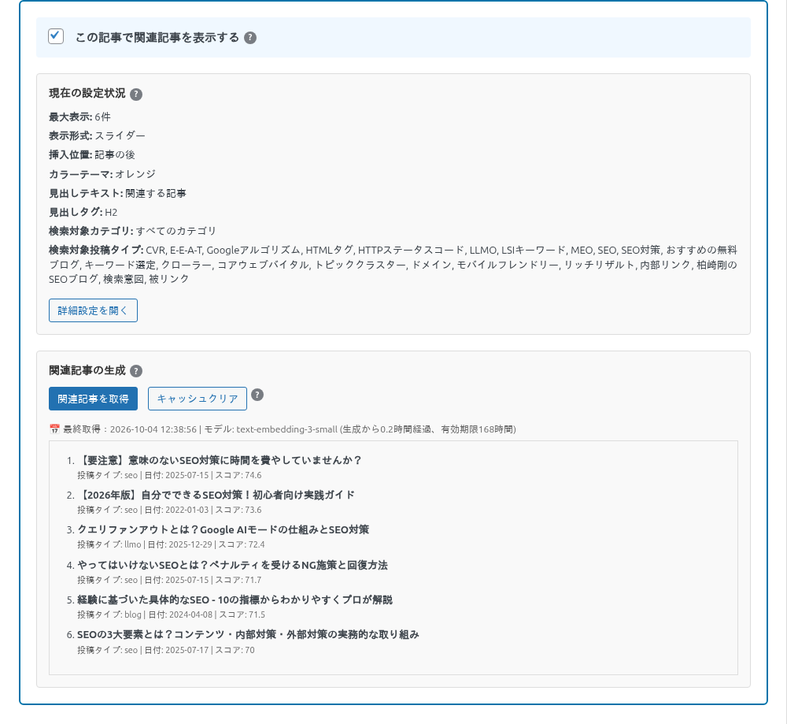
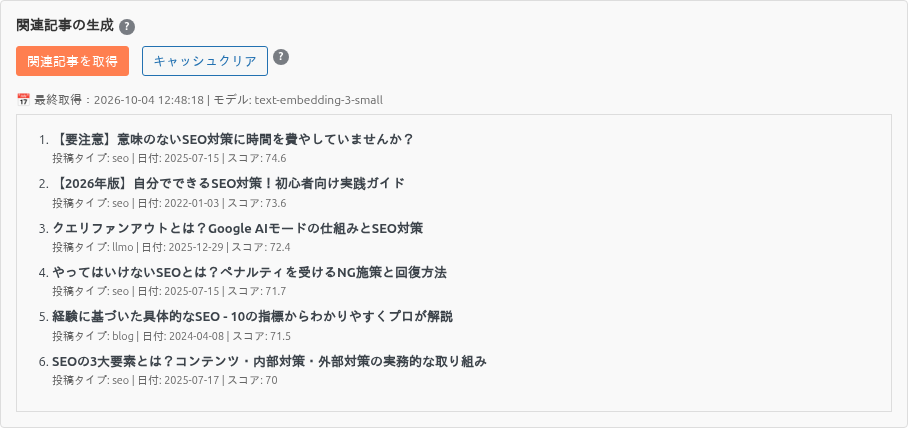
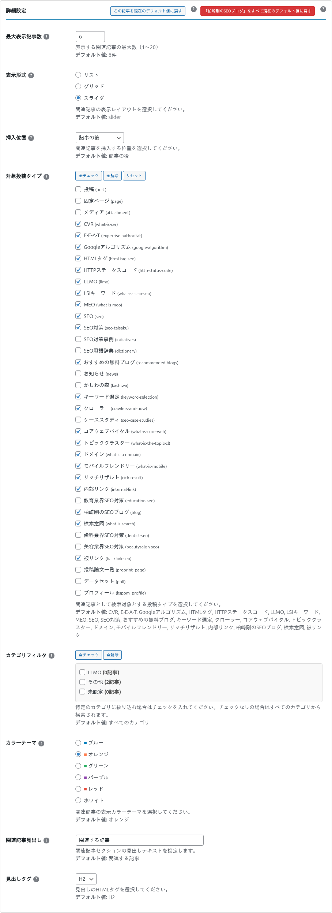

記事ごとの設定
記事の編集画面の下にある「🔗 Kashiwazaki SEO Related Posts」欄で、その記事に関連記事を出すかどうかと、記事ごとの表示件数・範囲・見た目を設定します。ここの設定はいちばん優先されます。
このページの内容
設定欄が出ないとき
「📋 投稿タイプ別設定」タブで、その投稿タイプの「関連記事を表示」にチェックを入れて保存してください。チェックした投稿タイプの編集画面にだけ、この欄が出ます。
関連記事を表示する（ON / OFF）

| 項目 | 説明 |
|---|---|
| この記事で関連記事を表示する | ON にすると、この記事の本文に関連記事を自動で入れます。新しい記事は OFF で始まります。OFF にすると下の設定は隠れ、OFF のまま記事を保存すると、この記事に保存されていた設定も消えます。 |
| 現在の設定状況 | この記事で今使われている値（最大表示・表示形式・挿入位置・色・見出し・対象カテゴリ・対象投稿タイプ）です。記事に保存された値がなければ、カスタム設定（なければ共通設定）の値です。 |
| 詳細設定を開く | 記事ごとの値を変える欄を開きます（下の「詳細設定」）。 |
関連記事の生成（確認・作り直し）

| ボタン・表示 | 説明 |
|---|---|
| 関連記事を取得 | 欄に入っている「最大表示記事数」「対象投稿タイプ」の値で関連記事をその場で選び、キャッシュに保存します。新しい記事は一度保存してから押してください。管理者が押した場合は、GPT を使う方式でもその場で GPT の結果を作ります。 |
| キャッシュクリア | この記事の関連記事キャッシュを消します。次に記事が表示されたときに選び直します。 |
| 最終取得 | キャッシュを作った日時、使ったモデル（意味の近さなら embedding モデル名）、経過時間と有効期限です。 |
| 一覧 | 選ばれた記事のタイトル・投稿タイプ・日付・スコア（近さ。大きいほど近い）です。 |
詳細設定

| 項目 | 説明 |
|---|---|
| 最大表示記事数 | この記事に表示する関連記事の数です（1〜20）。 |
| 表示形式 | リスト・グリッド・スライダー。 |
| 挿入位置 | 記事の前・記事の後・最初の段落の後。 |
| 対象投稿タイプ | この記事の関連記事の候補にする投稿タイプです（共通設定の「関連記事の検索範囲」と同じ意味）。 |
| カテゴリフィルタ | チェックしたカテゴリの記事だけを候補にします。チェックなしなら全カテゴリ。 |
| カラーテーマ | この記事の関連記事欄の色です。 |
| 関連記事見出し / 見出しタグ | この記事の見出しの文字とタグです。 |
| ボタン | 説明 |
|---|---|
| この記事を現在のデフォルト値に戻す | 欄の値を、カスタム設定（なければ共通設定）の値に戻します。記事を保存すると確定します。 |
| 「投稿タイプ名」をすべて現在のデフォルト値に戻す | この投稿タイプの全記事で、記事ごとに保存された設定を消してカスタム設定（なければ共通設定）に合わせます。投稿タイプ別設定の「すべて現在の設定値を反映」と同じ操作です。 |
記事を保存すると、欄の値がすべて記事に残ります
「この記事で関連記事を表示する」が ON の記事を保存すると、詳細設定を開いていなくても、欄の値（そのときの初期値）がすべて記事に保存されます。あとで共通設定やカスタム設定を変えても、この記事には効きません。理由と対処は「設定の優先順位と反映」を見てください。記事を保存すると、その記事の関連記事キャッシュも消えます。